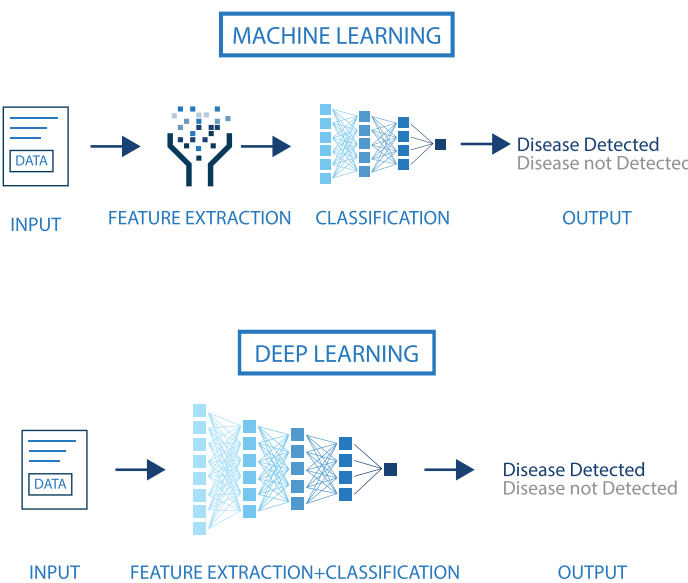
Introduction to ANN and Deep Learning
A. Sanchez, F. Reverter and E. Vegas
Overview of Deep Learning
Historical Background (1)
Today, in April 2023, our world is convulsed by the explosion of Artificial Intelligence.
It has probably been in the last months (weeks), since ChatGPT has arrived, that everybody has an opinion, or a fear on the topic.

Historical Background (2)
AI use statistical learning methods, such as machine learning algorithms, to make predictions based on large amounts of data.
Prediction is a fundamental capability of AI and is used in a wide range of applications.
However, it is important to keep in mind that AI has far-reaching implications beyond its predictive capabilities, including ethical, social or technological.
Deep learning
Deep learning is a successful AI model which has powered many application such as self-driving cars, voice assistants, and medical diagnosis systems.
Essentially, deep learning extends the basic principles of artificial neural networks by
- Adding complex architectures and algorithms and
- At the same time becoming more automatic
We won’t delve into the history of ANN, but a quick look at it may help fully grasp its current capabilities.
The early history of AI (1)

A Brief History of AI from 1940s till Today
- The origins of AI, and as such of DL can be traced almost one century backwards;
- A Quick History of AI, ML and DL
Milestones in the history of DL
We can see several hints worth to account for:
The Perceptron and the first Artificial Neural Network where the basic building block was introduced.
The Multilayered perceptron and back-propagation where complex architectures were suggested to improve the capabilities.
Deep Neural Networks, with many hidden layers, and auto-tunability capabilities.
From Artificial Neural Networks to Deep learning
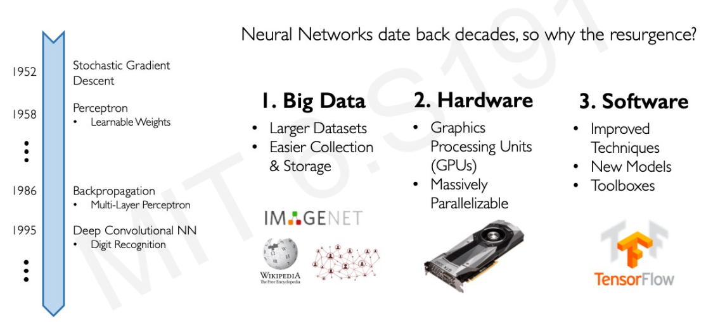 Source: Alex Amini’s ‘MIT Introduction to Deep Learning’ course (introtodeeplearning.com)
Success stories
Success stories such as
the development of self-driving cars,
the use of AI in medical diagnosis, and
the creation of personalized recommendations in online shopping
have also contributed to the widespread adoption of AI.
AI, ML, DL …

AI, ML, DL …
Artificial intelligence: Ability of a computer to perform tasks commonly associated with intelligent beings.
Machine learning: study of algorithms that learn from examples and experience instead of relying on hard-coded rules and make predictions on new data
Deep learning: sub field of ML focusing on learning data representations as successive successive layers of increasingly meaningful representations.
Machine vs Deep Learning
- DNN: feature extraction and classification without (or with much les) human intervention.
- DNN improves with data availability, without seemingly reaching plateaus.
Size does matter!
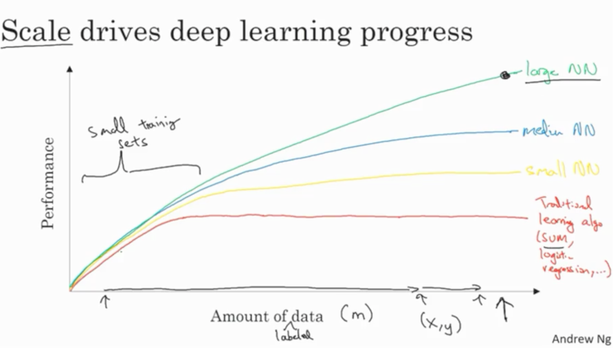An illustration of the performance comparison between deep learning (DL) and other machine learning (ML) algorithms, where DL modeling from large amounts of data can increase the performance
The impact of Deep learning
Near-human-level image classification
Near-human-level speech transcription
Near-human-level handwriting transcription
Dramatically improved machine translation
Dramatically improved text-to-speech conversion
Digital assistants such as Google Assistant and Amazon Alexa
Near-human-level autonomous driving
Improved ad targeting, as used by Google, Baidu, or Bing
Improved search results on the web
Ability to answer natural language questions
Superhuman Go playing
Not all that glitters is gold …
According to F. Chollet, the developer of Keras,
- “we shouldn’t believe the short-term hype, but should believe in the long-term vision.
- It may take a while for AI to be deployed to its true potential—a potential the full extent of which no one has yet dared to dream
- but AI is coming, and it will transform our world in a fantastic way”.
Artificial Neural Networks
The perceptron, the building block
The perceptron, was introduced in the 50’s (one version of the perceptron at least), as a mathematical model that might emulate a neuron.
The idea was trying to produce a model that, given some inputs, and an appropriate set of examples, learn to produce the desired output.
Mc Cullough’s neuron
- The first computational model of a neuron was proposed by Warren MuCulloch (neuroscientist) and Walter Pitts (logician) in 1943.
Mc Cullough’s neuron
- It may be divided into 2 parts.
- The first part, \(g\),takes an input (ahem dendrite ahem),
- It performs an aggregation and
- based on the aggregated value the second part, \(f\), makes a decision.
See the source of this picture for an illustration on how this can be used to emulate logical operations such as AND, OR or NOT, but not XOR.
Limitations
This first attempt to emulate neurons succeeded but with limitations:
What about non-Boolean (say, real) inputs?
What if all inputs are not equal?
What if we want to assign more importance to some inputs?
What about functions which are not linearly separable? Say XOR function
Overcoming the limitations
To overcome these limitations Frank Rosenblatt, proposed the classical perception model, the artificial neuron, in 1958.
It is more generalized computational model than the McCullough-Pitts neuron where weights and thresholds can be learnt over time.
Rosenblatt’s perceptron is very similar to an M-P neuron but
- It takes a weighted sum of the inputs and
- It sets the output as one only when the sum is more than an arbitrary threshold (theta).
Rosenblatt’s perceptron
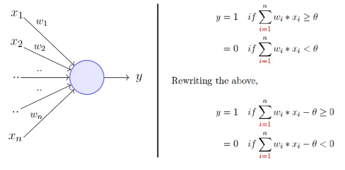Rosenblatt’s perceptron (1)
- Instead of hand coding the thresholding parameter \(\theta\),
- It is added as one of the inputs, with the weight \(w_0=-\theta\).
Comparison between the two
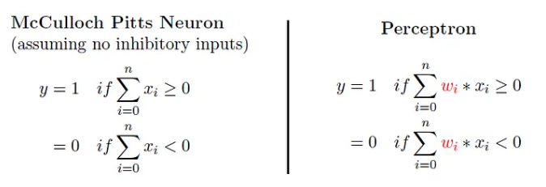Comparison between the two
This is an improvement because
- both, weights and threshold, can be learned and
- the inputs can be real values
But there is still a drawback in that a single perceptron can only be used to implement linearly separable functions.
Artificial Neural Networks improve on this by introducing Activation Functions
Activation in biological neurons
- Biological neurons are specialized cells in the CNS that transmit electrical and chemical signals to communicate with each other.
- The neuron’s activation is based on the release of neurotransmitters, chemical substances that transmit signals between nerve cells.
- When the signal reaching the neuron exceeds a certain threshold, the neuron releases neurotransmitters to continue the communication process.
Activation functions in AN
- Analogously, activation functions in AN are functions to decide if the AN it is activated or not.
- In AN, the activation function is a mathematical function applied to the neuron’s input to produce an output.
- In practice it extends to complicated functions that can learn complex patterns in the data.
- Activation functions can incorporate non-linearity, improving over linear classifiers.
Activation function
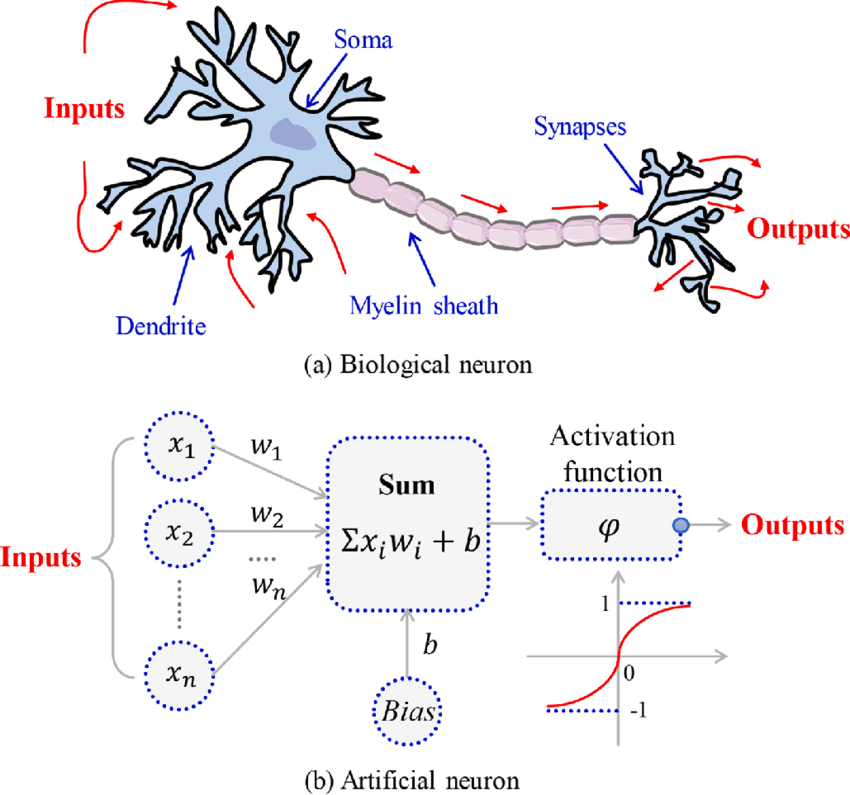Artificial Neuron
With all these ideas in mind we can now define an Artificial Neuron as a computational unit that :
takes as input \(x=(x_0,x_1,x_2,x_3)\) (\(x_0\) = +1, called bias),
outputs \(h_{\theta}(x) = f(\theta^\intercal x) = f(\sum_i \theta_ix_i)\),
where \(f:\mathbb{R}\mapsto \mathbb{R}\) is called the activation function.
Activation functions
Goal of activation function is to provide the neuron with the capability of producing the required outputs.
Flexible enough to produce
- Either linear or non-linear transformations.
- Output in the desired range ([0,1], {-1,1}, \(\mathbb{R}^+\)…)
Usually chosen from a (small) set of possibilities.
- Sigmoid function:
- Hyperbolic tangent, or
tanh, function - ReLU
The sigmoid function
\[ f(z)=\frac{1}{1+e^{-z}} \]
Output real values \(\in (0,1)\).
Natural interpretations as probability of an event
vanishing gradient problem
Its derivative is: \(f'(z)=f(z)(1-f(z))\).
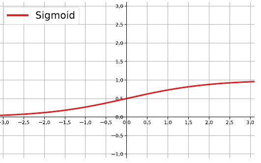
the hyperbolic tangent
Also called tanh, function:
\[ f(z)=\frac{e^{z}-e^{-z}}{e^{z}+e^{-z}} \]
outputs are zero-centered and bounded in −1,1
scaled and shifted Sigmoid
stronger gradient but still has vanishing gradient problem
Its derivative is \(f'(z)=1-(f(z))^2\).
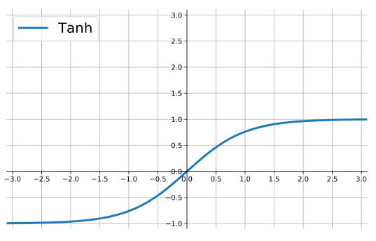
The ReLU
rectified linear unit: \(f(z)=\max\{0,z\}\).
Close to a linear: piece-wise linear function with two linear pieces.
Outputs are in %(0,)$ , thus not bounded
Half rectified: activation threshold at 0
No vanishing gradient problem
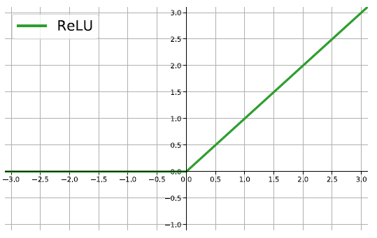
More activation functions
 .
.
Putting it all together
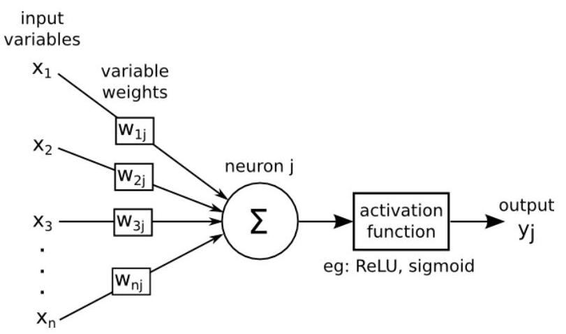\(\Sigma=\left\langle w_{j}, x\right\rangle+ b_{j}\)
Multilayer perceptrons
- A Multilayer Perceptron or Artificial Neural Network (ANN) is a computational model that mimics the structure and function of the human brain.
- It is composed of interconnected nodes, called neurons, that are organized into layers.
- Neurons in each layer are connected to neurons in the next layer, forming a directed graph-like structure.
- The first layer (input layer) receives input data.
- Last layer produces the final prediction
- Intermediate (hidden) layers perform intermediate calculations.
An Artificial Neural network
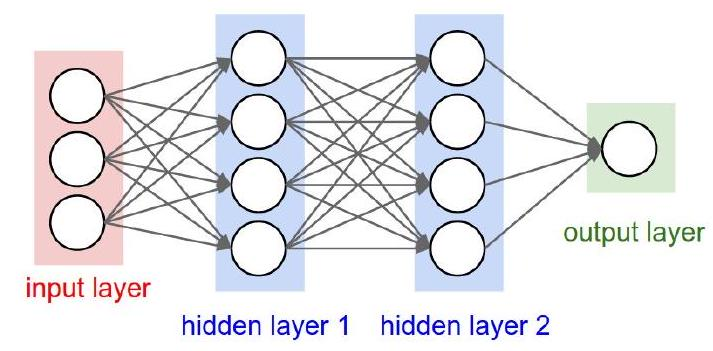The architecture of ANN
Multilayers perceptrons have a basic architecture:
- each unit (or neuron) of a layer is linked to all the units of the next layer
- but has no link with the neurons of the same layer.
This basic architecture can changes in many possible ways
- There may be links between neurons in same layer,
- Missing links between two layers …
The architecture of an ANN
The architecture of a multilayer perceptron is defined by:
- The number of hidden layers and
- The number of neurons in each layer
Activation functions are important in the definition of the ANN, but not relevant for the architecture.
Activation functions for ANN (1)
- For the output layer, the activation function is generally different from the one used on the hidden layers.
- For regression, we apply no activation function on the output layer.
- For binary classification, where output is a prediction of \(\mathbb{P}(Y=1 /X) \in [0,1]\)
- The sigmoid activation function is used.
- For multi-class classification, where there is one neuron per class giving a prediction of \(\mathbb{P}(Y=i / X)\).
- The soft-max activation function is common
The soft-max activation function
\[ \operatorname{softmax}(z)_{i}=\frac{\exp \left(z_{i}\right)}{\sum_{j} \exp \left(z_{j}\right)} \]
An example
A predictive ANN
We use the neuralnet package to build a simple neural network to predict if a type of stock pays dividends or not.
Data for the example
And use the dividendinfo.csv dataset from https://github.com/MGCodesandStats/datasets
mydata <- read.csv("https://raw.githubusercontent.com/MGCodesandStats/datasets/master/dividendinfo.csv")
str(mydata)'data.frame': 200 obs. of 6 variables:
$ dividend : int 0 1 1 0 1 1 1 0 1 1 ...
$ fcfps : num 2.75 4.96 2.78 0.43 2.94 3.9 1.09 2.32 2.5 4.46 ...
$ earnings_growth: num -19.25 0.83 1.09 12.97 2.44 ...
$ de : num 1.11 1.09 0.19 1.7 1.83 0.46 2.32 3.34 3.15 3.33 ...
$ mcap : int 545 630 562 388 684 621 656 351 658 330 ...
$ current_ratio : num 0.924 1.469 1.976 1.942 2.487 ...Data pre-processing
Test and training sets
Finally we break our data in a test and a training set:
Training a neural network
We train a simple NN with two hidden layers, with 4 and 2 neurons respectively.
Network plot
The output of the procedure is a neural network with estimated weights
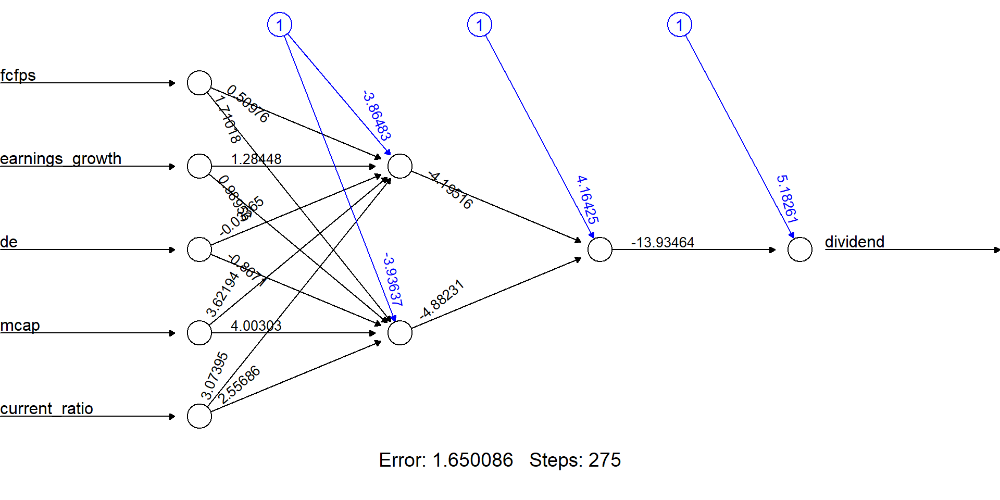Predictions
temp_test <- subset(testset, select =
c("fcfps","earnings_growth",
"de", "mcap", "current_ratio"))
nn.results <- compute(nn, temp_test)
results <- data.frame(actual =
testset$dividend,
prediction = nn.results$net.result)
head(results) actual prediction
9 1 0.9919213885
19 1 0.9769206123
22 0 0.0002187144
26 0 0.6093330933
27 1 0.7454164893
29 1 0.9515431416Model evaluation
Some mathematics behind ANN
Training an ANN
An ANN is a predictive model whose properties and behaviour can be mathematically characterized.
In practice this means:
- The ANN acts by composing a series of linear and non-linear (activation) functions.
- These are characterized by their weights and biases, that need to be learnt .
Training the network is done by
- Selecting an appropriate (convex) loss function,
- Finding those weights that minimize a the total cost function (avg loss).
The tools for training
Training an ANN is usually done using some iterative optimization procedure such as Gradient Descent.
This requires evaluating derivatives in a huge number of points.
- Such high number may be reduced by Stochastic Gradient Descent.
- The evaluation of derivatives is simplified thanks to Backpropagation.
A guiding example
Consider a toy ANN to illustrate the concepts
- Input layer with 3 input units (plus bias unit),
- 1 hidden layer with 3 hidden units,
- Output layer with 1 output unit.
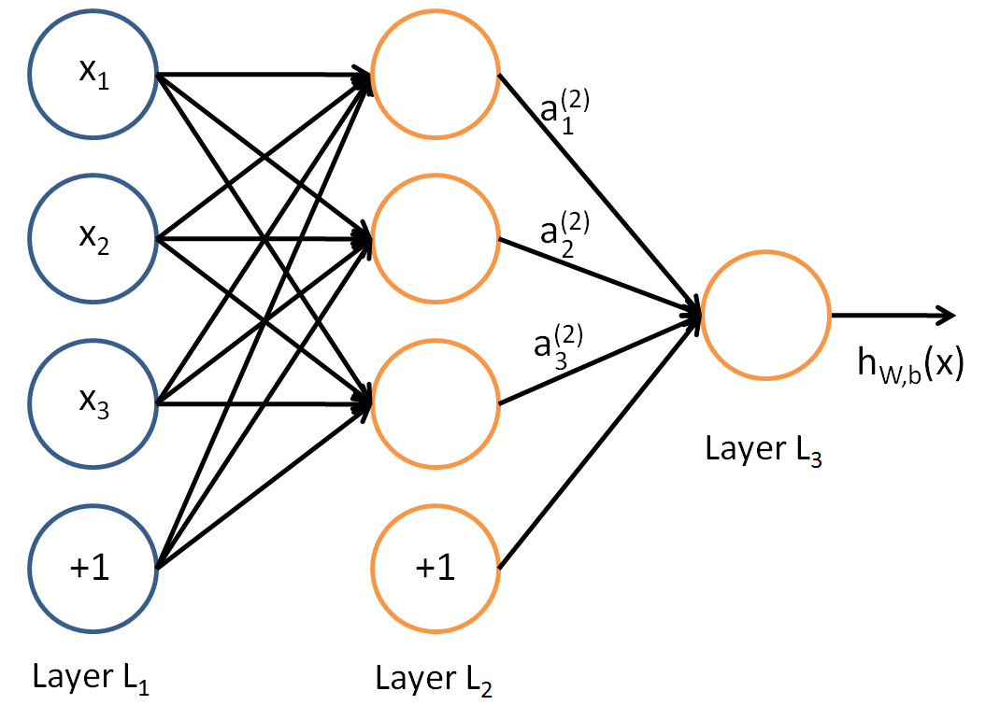
A logistic regression ANN
From input layer to layer 2: A non-linear transformation yields new set of complex features.
From layer 2 to output layer: New features are transformed, using a sigmoid activation function.
\[ \mbox{The final output is: }h_{\theta}(x)=\frac{1}{1+e^{-\theta^\intercal x}} \]
Logistic regression (1)
Recall that, the logistic regression model is:
\[ \log\frac{p(Y=1|x)}{1-p(Y=1|x)}=\theta^\intercal x \]
Isolating \(p(Y=1|x)\) and taking logs in both sides:
\[ \frac{p(Y=1|x)}{1-p(Y=1|x)}=e^{\theta^\intercal x} \]
Logistic regression (2)
\[ p(Y=1|x)=\frac{e^{\theta^\intercal x}}{1+e^{\theta^\intercal x}}=\frac{1}{1+e^{-\theta^\intercal x}} \]
That is: when the activation function of the output node is the sigmoid activation function, the output coincides with a logistic regression on complex features
The output of the ANN. \(h_{\theta}(x)\), estimates \(p(Y=1|x)\).
ANN have weights aka parameters
- Let \(n_l\) denote the number of layers in our network, thus \(n_l=3\) in our example.
- Layer \(L_1\) is input layer, and layer \(L_{n_l}=L_3\) the output layer.
- Our ANN has parameters \(\Theta=(\Theta^{(1)},\Theta^{(2)})\), where:
- \(\theta^{(l)}_{ij}\) denotes weights associated with
- the connection between unit \(j\) in layer \(l\) and
- unit \(i\) in layer \(l+1\).
- \(\theta^{(l)}_{ij}\) denotes weights associated with
Back to the example:
Thus, in our example, we have:
- \(\Theta^{(1)}\in\mathbb{R}^{3\times 4}\), and
- \(\Theta^{(2)}\in\mathbb{R}^{1\times 4}\).
Note that bias units don’t have inputs or connections going into them, since they always output the value +1.
The ANN is defined by its weights
Let \(s_l\) denote the number of nodes in layer \(l\) (not counting the bias unit).
Now, write \(a^{(l)}_i\) to denote the activation (meaning output value) of unit \(i\) in layer \(l\).
- For \(l=1\), \(a^{(1)}_i=x_i\) denotes \(i\)-th input.
Given a fixed setting of the parameters \(\Theta\), this ANN defines a model \(h_{\Theta}(x)\) that outputs a real number.
Combining everything to compute
We can now see how these weights are used to produce the output: \[\begin{eqnarray} a_1^{(2)}&=&f(\theta_{10}^{(1)}+\theta_{11}^{(1)}x_1+\theta_{12}^{(1)}x_2+\theta_{13}^{(1)}x_3)\\ a_2^{(2)}&=&f(\theta_{20}^{(1)}+\theta_{21}^{(1)}x_1+\theta_{22}^{(1)}x_2+\theta_{23}^{(1)}x_3)\\ a_3^{(2)}&=&f(\theta_{30}^{(1)}+\theta_{31}^{(1)}x_1+\theta_{32}^{(1)}x_2+\theta_{33}^{(1)}x_3)\\ h_{\Theta}(x)&=&a_1^{(3)}=f(\theta_{10}^{(2)}+\theta_{11}^{(2)}a_1^{(2)}+\theta_{12}^{(2)}a_2^{(2)}+\theta_{13}^{(2)}a_3^{(2)}) \end{eqnarray}\]
Now, letting \(z_i^{(l)}\) denote the total weighted sum of inputs to unit \(i\) in layer \(l\), including the bias term \[z_i^{(2)}=\theta_{i0}^{(1)}+\theta_{i1}^{(1)}x_1+\theta_{i2}^{(1)}x_2+\theta_{i3}^{(1)}x_3, \] the output becomes: \(a_i^{(l)}=f(z_i^{(l)})\).
Compacting notation
Note that this easily lends itself to a more compact notation.
Activation functions \(f(\cdot)\) apply to individual neurons, so it is admisible to write: \[ f([z_1,z_2,z_3]) = [f(z_1), f(z_2),f(z_3)], \]
A more compact notation for previous equations:
\[ \begin{eqnarray*} z^{(2)}&=&\Theta^{(1)}x\nonumber\\ a^{(2)}&=&f(z^{(2)})\nonumber\\ z^{(3)}&=&\Theta^{(2)}a^{(2)}\nonumber\\ h_{\Theta}(x)&=&a^{(3)}=f(z^{(3)})\nonumber \end{eqnarray*} \]
Compacting notation (II)
More generally, recalling that we also use \(a^{(1)}=x\) to also denote the values from the input layer,
then given layer \(l\)’s activations \(a^{(l)}\), we can compute layer \(l+1\)’s activations \(a^{(l+1)}\) as:
Matricial representation (I)
- The output in layer \(l+1\), from layer \(l\) can be written as a matrix product
\[ z^{(l+1)}= \begin{bmatrix} z_1^{(l+1)}\\ z_2^{(l+1)}\\ \vdots\\ z_{s_{l+1}}^{(l)} \end{bmatrix}= \begin{bmatrix} \theta_{10}^{(l)}& \theta_{11}^{(l)}&\theta_{12}^{(l)}&...&\theta_{1s_{l}}^{(l)}&\\ \theta_{20}^{(l)}& \theta_{21}^{(l)}&\theta_{22}^{(l)}&...&\theta_{2s_{l}}^{(l)}&\\ \vdots & \vdots& \vdots & \vdots & \vdots\\ \theta_{s_{l+1}0}^{(l)}& \theta_{s_{l+1}1}^{(l)}&\theta_{s_{l+1}2}^{(l)}&...&\theta_{s_{l+1}s_{l}}^{(l)}&\\ \end{bmatrix} \cdot\begin{bmatrix} 1\\ a_1^{(l)}\\ a_2^{(l)}\\ \vdots\\ a_{s_l}^{(l)} \end{bmatrix} \]
Matricial representation (II)
The activation is then:
\[ a^{(l+1)}= \begin{bmatrix} a_1^{(l+1)}\\ a_2^{(l+1)}\\ \vdots\\ a_{s_{l+1}}^{(l)} \end{bmatrix}=f(z^{(l+1)})=\begin{bmatrix} f(z_1^{(l+1)})\\ f(z_2^{(l+1)})\\ \vdots\\ f(z_{s_{l+1}}^{(l)}) \end{bmatrix} \]
Forward propagation
By organizing our parameters in matrices
and using matrix-vector operations,
we can take advantage of fast linear algebra routines to
quickly perform calculations in our network.
This process is called forward propagation.
Multiple architectures for ANN
We have so far focused on a single hidden layer neural network of the example
One can build neural networks with many distinct architectures (meaning patterns of connectivity between neurons), including ones with multiple hidden layers.
Multiple layer dense Networks
- Most common choice is a \(n_l\)-layered network:
- layer 1 is the input layer,
- layer \(n_l\) is the output layer,
- and each layer \(l\) is densely connected to layer \(l+1\).
- In this setting, to compute the output of the network, we can compute all the activations in layer \(L_2\), then layer \(L_3\), and so on, up to layer \(L_{nl}\), using equations seen previously.
Feed Forward neural networks (FFNN)
- The type of NN described is called feed-forward neural network (FFNN), since
- All computations are done by Forward propagation
- The connectivity graph does not have any directed loops or cycles.
A loss function for optimization
In order to estimate the weights we will aim at minimizing an appropriate loss function.
A first idea may be to use squared error loss \[ l(h_\theta(x),y)=(y-\frac{1}{1+e^{-\theta^\intercal x}})^2 \]
However it happens to be that this is is not a convex problem which means that MSE is not appropriate.
Cross-entropy loss function
- Alternatively, we use the binary cross-entropy loss function : \[ l(h_\theta(x),y)=\big{\{}\begin{array}{ll} -\log h_\theta(x) & \textrm{if }y=1\\ -\log(1-h_\theta(x))& \textrm{if }y=0 \end{array} \]
- It can be written compactly as:
\[ l(h_\theta(x),y)=-y\log h_\theta(x) - (1-y)\log(1-h_\theta(x)) \]
A convex cost function
- Using cross-entropy loss, the cost function is of the form: \[\begin{eqnarray*} J(\theta)=-\frac{1}{n}\big[\sum_{i=1}^n&&(y^{(i)}\log h_\theta(x^{(i)})+\\ &&(1-y^{(i)})\log(1-h_\theta(x^{(i)}))\big] \end{eqnarray*}\]
- This is a convex optimization problem.
A regularized cost function
- Better to work with a regularized version of the cost function (we don’t regularize the bias units)
Optimization with gradient descent
- In ANN we do not aim at finding estimating equations (like likekihood equations) whose solution will solve the optimization problem
- Instead we use iterative procedures, that
- Are much faster
- Yield results as near the optimum as required.
- The (first) option of choice is the gradient descent method.
How gradient descent works (I)
- Suppose that our current vector is \(\theta\).
- How should we choose a perturbation, \(\Delta\theta\), so that the next vector, \(\theta+\Delta\theta\), represents an improvement?
- If \(\Delta\theta\) is small, then ignoring terms of order \(||\Delta\theta||^2\), a Taylor series expansion gives \[ J(\theta+\Delta\theta)\approx J(\theta)+\sum_{i=1}^p\frac{\partial J(\theta)}{\partial\theta_i}\Delta\theta_i \]
How gradient descent works (II)
Let \(\nabla J(\theta)\in\mathbb{R}^p\) be the vector of partial derivatives, aka the gradient: \[\begin{equation}\label{g1} \nabla J(\theta)=\big(\frac{\partial J(\theta)}{\partial\theta_1},...,\frac{\partial J(\theta)}{\partial\theta_p}\big)^\intercal, \mbox{then:} \end{equation}\] \[\begin{equation}\label{g2} J(\theta+\Delta\theta)\approx J(\theta)+\nabla J(\theta)^\intercal\Delta\theta \end{equation}\]
Our aim is to reduce the value of the cost function.
It seems reasonable to choose \(\Delta\theta\) (a direction) to make \(\nabla J(\theta)^\intercal\Delta\theta\) as negative as possible.
How gradient descent works (III)
- This can be addressed via the Cauchy-Schwarz inequality:
- For any \(f,g\in\mathbb{R}^p\), we have \(|f^\intercal g|\leq ||f||\cdot ||g||\).
- Moreover, the two sides are equal if and only if \(f\) and \(g\) are linearly dependent (meaning they are parallel).
How gradient descent works (IV)
So *the most negative that \(f^\intercal g\) can be is \(-||f||\cdot||g||\),
This happens when \(f=-g\).
Hence *we should choose \(\Delta\theta\) to lie in the direction of \(-\nabla J(\theta)\).
Keeping in mind that this approximation is relevant only for small \(\Delta\theta\), we will limit ourselves to a small step in that direction.
How gradient descent works (V)
This leads to the update \[\begin{equation}\label{g3} \theta \rightarrow \theta-\eta\nabla J(\theta) \end{equation}\]
\(\eta\) is small step size known as the learning rate.
This equation defines the steepest descent method.
We choose an initial vector and iterate
- until some stopping criterion has been met,
- or until the number of iterations has exceeded the computational budget.
The gradient descent algorithm
- Repeat:
\[ \theta_j=\theta_j-\eta\frac{\partial}{\partial\theta_j}J(\theta) \]
\[ \qquad \textrm{and simultaneously update all }\qquad \theta_j \]
\(\eta\in (0,1]\) denotes the learning parameter.
Gradient descent computes derivatives
- We aim to minimise the cost function
\[ \underset{\theta}{\textrm{min }}J(\theta) \]
- In order to use gradient descent, we need to compute \(J(\theta)\) and the partial derivatives: \[ \frac{\partial}{\partial\theta_j}J(\theta) \]
Other requirements for gradient descent
- The input data have to be normalized to have approximately the same range.
- Biases can be initialized to 0, but they cannot be initialized with the same values, otherwise, all the neurons of a hidden layer would have the same behavior.
- Initial parameters need to break symmetry between different units so weights are usually initialized at random:
Weights initialization
- We assume values \(\theta_{ij}^{(l)}\) to be
- i.i.d. Uniform on \([-c,c]\)
- with possibly \(c= 1/\sqrt{N_l}\) where \(N_l\) is the size of the hidden layer \(l\).
- We also sometimes initialize the weights with a normal distribution \(N(0,0.01)\).
Gradient descent drawbacks
- When we have a large number of parameters and a large number of training points, computing the gradient vector (\(\ref{g1}\)) at every iteration of the steepest descent method can be time consuming.
- It is mainly due to that we have to sum across all training points.
- This becomes prohibitively expensive when we have Big Data.
Stochastic Gradient
A much cheaper alternative is to replace the mean of the individual gradients over all training points
by the gradient at a single, randomly chosen, training point.
This leads to the simplest form of the stochastic gradient method.
Choose an integer \(i\) uniformly at random from \(\{1,...,n\}\) and update \[\begin{equation}\label{g4} \theta_j=\theta_j-\eta\frac{\partial}{\partial\theta_j}J(\theta;x^{(i)}) \end{equation}\]
Notice we have included \(x^{(i)}\) in the notation of \(J(\theta;x^{(i)})\) to remark the dependence.
Rationale for SGD
-At each step, the stochastic gradient method uses one randomly chosen training point to represent the full training set.
As the iteration proceeds, the method sees more training points.
So there is some hope that this dramatic reduction in cost-per-iteration will be worthwhile overall.
Note that, even for very small \(\eta\), the update (\(\ref{g4}\)) is not guaranteed to reduce the overall cost function we have traded the mean for a single sample.
Hence, although the phrase stochastic gradient descent is widely used, we prefer to use stochastic gradient.
SGD variants
- The version of the stochastic gradient method that we introduced in (\(\ref{g4}\)) is the simplest from a large range of possibilities.
- In particular, the index \(i\) in (\(\ref{g4}\)) was chosen by sampling with replacement after using a training point, it is returned to the training set and is just as likely as any other point to be chosen at the next step.
- An alternative is to sample without replacement; that is, to cycle through each of the \(n\) training points in a random order.
- Performing \(n\) steps in this manner, referred to as completing an epoch, may be summarized as follows:
SGD variants (3)
- If we regard the stochastic gradient method as approximating the mean over all training points by a single sample, then
- It is natural to consider a compromise where we use a small sample average. For some \(m<<n\) we could take steps of the following form.
- In this iteration, the set \(\{x^{(k_i)}\}_{i=1}^m\) is known as a mini-batch.
Improving SGD
- Because the stochastic gradient method is usually implemented within the context of a very large scale computation, algorithmic choices such as mini-batch size and the form of randomization are often driven by the requirements of high performance computing architectures.
- Also, it is, of course, possible to vary these choices, along with others, such as the learning rate, dynamically as the training progresses in an attempt to accelerate convergence.
Back propagation
- Back-propagation is the algorithm used to compute the gradients of the network.
- This procedure was developed by several authors in the decade of the 60’s but is Paul J. Werbos, (1974) in his thesis when demonstrates the use of this algorithm for ANN. - Years later, (David, E.
- presents the modern way to apply this technique to ANN, and sets the basis of the algorithm in use today.
The delta rule
In this paper, the authors presents a new method capable to change the predictions towards a desired output, they called it the delta rule.
This rule consist in compute the total error for the network and check how the error changes when certain elements from the network changes its value.
These changes are computed by differentiating the cost function with regard to each element in the network
Which would give us a measure of how much each element is contributing to the total error of the network,
This is, computing the gradient of the cost function we can know how the total error changes with regard to each element, and therefore apply the delta rule.
Applying the chain rule
- The cost function is an intricate composed function which contains the weights of all layers,
- the problem now is that the computations of this gradients are not straightforward as in a simple function,
- A node from a layer is the result of the composition of all the nodes from previous layers.
- To overcome it, Back-propagation uses the chain rule of differential calculus to compute the gradients of each element in the neural network,
-It contains two main phases referred to as the forward phase and backward phase:
Back-propagation: Forward Phase:
- The inputs for a data example are fed into the FNN.
- These inputs will be propagated through the network for all the neurons in all the layers using the current set of weights, to finally compute the final output.
Back-propagation: Backward Phase:
- Once the final output and the cost function are computed, we need to compute the gradients for all the weights in all the layers in the FNN to update them in order to reach the minimum.
- To compute the gradients the chain rule is used, is a backwards a process from output to input,
- Therefore we will start from the output node, compute all the gradients of the previous layer, and so on until we reach the input layer.